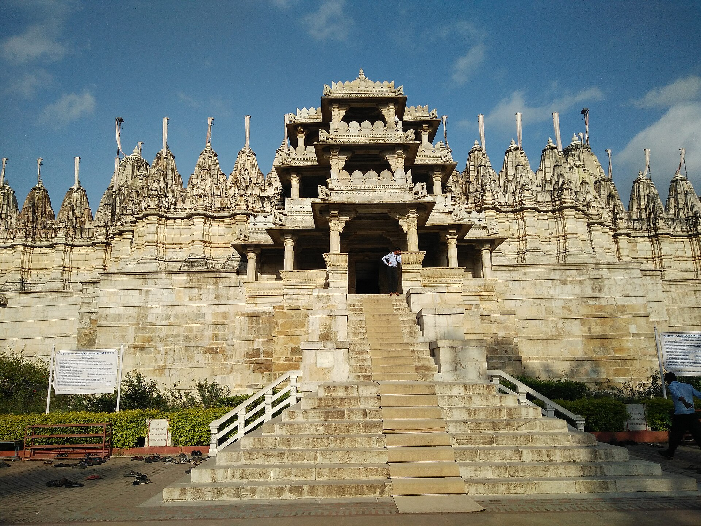

OCEAN OF WISDOM
பிற இந்தியத் தத்துவ மரபுகள்
சமணம் — வர்த்தமான மகாவீரர்
தோற்றமும் வரலாற்றுப் பின்னணியும்
சமணம் இந்தியாவின் தொன்மையான சிரமண மரபு. இருபத்துநான்கு தீர்த்தங்கரர்களை ஏற்றுக்கொள்கிறது. இருபத்துநான்காவது மகாவீரர் ஏற்கெனவே இருந்த பாதையைப் புதுப்பித்து ஒழுங்குபடுத்தினார்.

மையப் போதனைகள்
அஹிம்சை சமண அறநெறியின் மையம். உண்மை, களவின்மை, கட்டுப்பாடு, பற்றின்மை ஆகியவையும் முக்கியம். அநேகாந்தவாதம் உண்மையின் பல பரிமாணங்களை உணர்த்துகிறது.
நூல்கள், நடைமுறைகள், சமூகங்கள்
சமணத் தத்துவம் ஜீவனைத் தனித்த விழிப்புணர்வுள்ள உண்மையாகக் கருதுகிறது. நற்காட்சி, நன்ஞானம், நல்லொழுக்கம் வழி மோட்சம் கிடைக்கிறது. ஸ்வேதாம்பர, திகம்பர மரபுகள் வேறுபடுகின்றன.
மரபும் தொடரும் வாழ்வும்
சமண சமூகங்கள் இந்திய மொழிகள், தர்க்கம், இலக்கியம், கட்டிடக்கலை, அறப்பணி ஆகியவற்றுக்கு பங்களித்தன. கட்டுப்பாடு, அஹிம்சை ஆகியவை சூழலியல் பொறுப்பில் இன்றும் பொருத்தமானவை.
சமணத் தத்துவத்தின் தனித்துவமான கருத்துகள்
சமணச் சிந்தனை விடுதலையை ஜீவன் (உயிருள்ள ஆன்மா), அஜீவன் (உயிரற்ற மெய்ப்பொருள்) ஆகியவற்றின் உறவின் வழியாக விளக்குகிறது. கர்மம் ஆன்மாவுடன் ஒட்டிக்கொள்ளும் நுண்மையான பொருள் பிணைப்பாகக் கருதப்படுகிறது. ஒழுக்கம், கட்டுப்பாடு, தெளிந்த அறிவு ஆகியவை புதிய கர்மம் சேர்வதைத் தடுத்து, சேர்ந்த கர்மத்தை நீக்க உதவுகின்றன.
மூன்று ரத்தினங்கள்—நற்காட்சி, நன்ஞானம், நல்லொழுக்கம்—விடுதலைப் பாதையின் அடித்தளங்கள். ஐந்து பெரிய விரதங்கள்: அஹிம்சை, வாய்மை, களவின்மை, பிரம்மச்சரியம், பற்றின்மை. துறவிகளும் இல்லறத்தாரும் இவற்றை வெவ்வேறு அளவில் கடைப்பிடிக்கின்றனர்.
அநேகாந்தவாதம் உண்மையை ஒரே கோணத்தில் முழுமையாகப் புரிந்துகொள்ள முடியாது எனக் கூறுகிறது. ஸ்யாத்வாதம் ஒரு கூற்றை அதன் பார்வைக் கோணத்தையும் வரம்பையும் குறிப்பிட்டு முன்வைக்கிறது. எல்லாக் கருத்துகளும் சமமாக உண்மை என்பதே இதன் பொருள் அல்ல.
ஆசான்கள், நூல்கள், வாழும் மரபுகள்
சமண மரபு பார்சுவநாதரை இருபத்துமூன்றாவது தீர்த்தங்கரராகவும் மகாவீரருக்கு முந்தைய ஆசானாகவும் போற்றுகிறது. தொடக்ககால தீர்த்தங்கரர்களின் காலக்கணிப்புகள் சமய மரபைச் சார்ந்தவை; அவற்றை வரலாற்று ஆய்வால் அனைத்தையும் தனித்தனியாக உறுதிப்படுத்த முடியாது. மகாவீரர் பொதுவாக கிமு ஆறாம் அல்லது ஐந்தாம் நூற்றாண்டில் வாழ்ந்தவராகக் கருதப்படுகிறார்; மரபுவழிக் காலக்கணிப்பும் நவீன ஆய்வும் வேறுபடுகின்றன.
உமாஸ்வாதி அல்லது உமாஸ்வாமியுடன் தொடர்புபடுத்தப்படும் தத்துவார்த்த சூத்திரம் தொடக்கப் பொது ஆண்டுகளில் உருவான முக்கியமான தத்துவ நூல்; ஸ்வேதாம்பரரும் திகம்பரரும் இதனை மதிக்கின்றனர். நூல்கள், துறவற ஒழுக்கம், பெண்களின் விடுதலை பற்றிய கருத்துகளில் இரு மரபுகளுக்கும் வேறுபாடுகள் உள்ளன; தீர்த்தங்கரர்களும் ஆன்மத் தூய்மைப் பாதையும் பொதுவானவை.
பர்யுஷண் மற்றும் தசலக்ஷணத்தின் மன்னிப்பு வழிபாடுகளுடன் தொடர்புடைய மிச்சாமி துக்கடம் பொறுப்புணர்வு, மன்னிப்பு, நல்லிணக்கம் ஆகியவற்றை வெளிப்படுத்துகிறது.